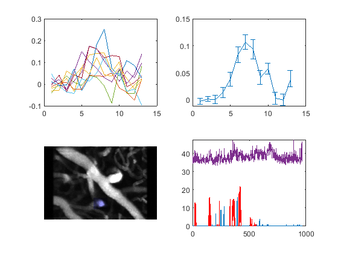

Contents
blood vessel wheel running correlation notebook
Information
Set the bv layer folder path here:
path = 'D:\2P\CGRP03\201109_CGRP03\201109_CGRP03_run3\bv\6to7'; % Set related parameters here: these is only realted with plot, it won't % effect the analysis value. prebout_length = 3 % second. the time period before each bout as baseline period. postbout_length = 5 % second. The time period after start of each bout as response period.
prebout_length =
3
postbout_length =
5
Don't change any code below=============================== load data
[animal, date, run] = pathTranslate(path); path = correct_folderpath(path); bvfilesys = bv_file_system(); resultpath = [path, bvfilesys.resultpath]; result = load(resultpath); result = result.result; ref = read(Tiff([path, bvfilesys.refpath],'r')); runfilepath = sbxPath(animal,date,run,'running'); runresult = load(runfilepath.result); runresult = runresult.result; runbvcorrpath = [correct_folderpath(path), bvfilesys.bv_running_correlation_resultpath]; runbvresult = load(runbvcorrpath); runbvresult = runbvresult.result; % plot data by id. for i = 1:length(result.roi) roiid = i; % change to id in the future roi = result.roi{i}; subref = addroi(ref, roi.BW); subrunbvresult = runbvresult([runbvresult.roiid] == roiid); % If it is string, it may need change. disp(['roi id: ', roiid]); disp(['baseline diameter: ', num2str(roi.diameter)]); for j = 1:length(subrunbvresult) tmp = reshape(subrunbvresult(j).bvarray, [],1); if j == 1 mx = tmp; else mx = cat(2,mx,tmp); end end subplot(2,2,1); imshow(subref); subplot(2,2,2); plot_running(runresult); hold on yline(roi.diameter_baseline, 'color', 'blue'); yline(roi.diameter_baseline + roi.diameter_std, 'color', 'green'); yline(roi.diameter_baseline - roi.diameter_std, 'color', 'green') plot(bint1D(roi.diameter, result.scanrate)); xticks([0:5*60:length(roi.diameter)]); xticklabels([0:5:length(roi.diameter)/60]); xlabel('time course (min)'); hold off subplot(2,2,3); plot(mx); ylabel('diameter dff changes'); xlabel('time course (min)'); xticks(1:size(mx,1)); xticklabels([-prebout_length:postbout_length-1]); subplot(2,2,4); scatter([subrunbvresult.maxspeed], [subrunbvresult.maxdff]); ylabel('diameter max dff changes'); xlabel('bout max speed (block/sec)'); end
roi id: baseline diameter: 42 39 37 39 37 36 34 35 37 35 38 38 37 40 38 39 44 41 40 36 39 35 35 37 36 37 37 36 35 37 38 34 37 34 35 39 38 38 39 39 37 33 34 34 32 29 27 30 27 27 25 27 27 28 27 27 30 25 28 28 31 30 27 27 30 31 25 29 29 27 26 27 28 24 26 26 26 27 27 31 29 27 29 28 32 30 32 32 34 34 33 37 38 34 38 35 35 37 38 37 38 39 38 37 38 36 39 36 36 36 35 35 36 35 36 35 34 35 34 31 33 34 32 32 32 32 32 30 31 31 30 29 32 31 30 31 30 31 28 30 32 31 30 30 29 29 29 31 32 30 31 33 30 32 30 31 28 29 30 29 31 29 32 31 29 29 32 30 30 31 32 31 30 31 29 29 29 30 29 31 30 28 30 31 30 31 29 30 29 30 30 29 29 29 30 28 30 28 31 31 29 29 29 30 31 32 33 33 33 31 31 33 31 29 32 31 31 30 32 31 33 31 32 32 31 33 31 29 31 33 33 32 30 31 30 31 33 34 33 31 33 32 31 32 30 32 32 31 31 33 31 31 31 31 31 30 33 31 32 30 30 32 32 35 33 32 32 33 32 29 33 32 34 30 31 33 33 32 33 32 30 32 33 32 32 31 32 31 31 30 33 30 32 32 33 34 33 34 36 35 35 37 34 33 30 33 31 31 31 33 31 30 32 32 33 30 33 31 33 32 34 32 31 35 32 30 31 32 31 29 30 30 33 29 30 29 31 32 33 33 31 34 32 30 29 30 31 31 30 30 31 30 30 32 30 32 30 31 31 30 31 31 32 31 31 31 31 33 33 31 33 31 30 32 33 31 33 32 31 30 30 32 31 30 30 31 32 31 32 31 33 30 32 32 32 31 31 33 31 32 30 30 31 31 33 34 34 33 33 33 35 34 32 33 35 33 33 34 32 30 31 31 32 32 32 31 34 34 32 33 33 32 31 33 32 32 32 32 30 30 33 33 32 31 31 32 30 31 31 31 32 32 33 33 32 31 31 32 31 31 30 33 33 30 33 32 33 32 31 32 32 33 31 32 31 33 32 32 32 31 31 32 33 32 33 31 31 33 33 32 32 33 33 33 31 33 33 34 33 34 33 35 35 32 34 35 31 30 31 32 31 32 31 33 33 31 32 34 32 32 33 30 32 30 31 32 31 30 31 31 32 31 32 32 31 32 32 31 31 31 32 32 32 31 31 31 30 32 31 33 32 33 30 32 32 31 31 32 30 31 30 29 31 32 31 33 31 31 31 32 31 31 31 33 33 33 30 31 29 31 33 31 32 32 31 30 33 32 30 32 31 32 31 29 32 31 31 30 31 30 31 29 32 30 31 31 29 31 29 31 32 31 32 31 32 31 32 35 37 40 41 40 40 38 34 34 32 33 34 32 36 36 35 32 35 36 31 33 32 35 37 37 32 35 34 33 32 31 33 31 33 32 32 32 34 33 32 31 31 31 31 30 30 31 30 30 30 30 30 30 29 30 32 31 28 31 32 32 32 33 33 30 29 32 31 31 38 37 35 34 33 32 32 31 31 32 29 30 32 30 30 31 29 30 36 34 34 32 32 32 32 30 31 31 32 31 32 29 30 30 29 32 32 31 33 31 32 30 29 31 32 30 31 32 29 32 33 35 34 34 34 31 31 29 35 32 34 33 32 30 31 32 32 30 30 32 31 30 31 30 31 30 32 34 33 34 34 31 34 28 30 31 31 30 33 31 32 32 30 29 30 31 31 33 30 31 34 30 33 33 33 32 32 31 33 32 33 29 30 29 30 30 29 31 29 32 31 30 31 30 31 30 31 31 30 33 32 31 30 30 31 30 29 30 31 31 31 31 30 33 31 30 30 31 29 31 32 31 31 30 31 31 34 34 35 35 33 33 33 32 31 31 31 32 31 29 30 30 32 31 34 30 32 31 31 32 28 32 32 32 31 32 32 29 28 30 33 29 30 30 30 30 30 29 31 32 31 31 33 33 35 33 31 31 35 36 32 34 31 30 32 31 31 31 29 32 29 30 29 29 29 31 32 29 28 31 32 31 31 30 33 31 31 30 29 33 35 35 34 32 33 33 33 31 29 30 31 30 30 32 33 31 33 30 31 31 28 30 31 31 31 31 30 30 31 31 34 34 33 34 30 32 32 30 32 37